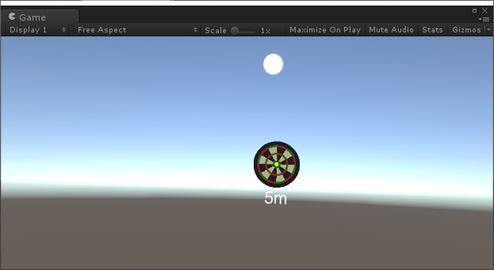
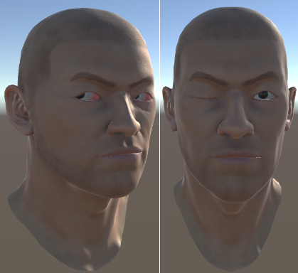

Prerequisites
The SRanipal SDK for Unity can be implemented only when the SRanipal runtime has been setup. Use the following guideline to setup the SRanipal Runtime — SRanipal_version\SRanipal_SDK_Guide.pdf.
Create a new project and import the SDK
- Open unity and create a new 3D project.
- Select Asset > Import Package > Custom Package.
- Select the
Vive-SRanipal-Unity-Plugin.unitypackageUnity Package that you download above. - In the Importing Package dialog, make sure that all package options are selected and click Import.
- Accept any API upgrades if prompted.
- Enable Unity VR support (official manual).

- Open Window > Package Manager. Select openVR(Desktop) and click Install.
Play the sample scene
- In the Unity Project window, find the scene EyeSample.unity in: Asset > ViveSR > Scenes.
- Ensure that all requirements in SRanipal_SDK_Guide.pdf are met and then click on Play.
Build the sample app
- Select File > Build Settings.
- In the Unity Build Settings window, adjust the Architecture on x86_64, and click on Build and Run.
Enable SRanipal functionality in your Unity project.
Enable the SRanipal Framework
- Create an empty GameOjbect. We name it SRanipal here.

- Add the component SRanipal_Framework to the Gameobject SRanipal.
- Toggle Enable Eye according to your application.
- Explore the Eye features.
Eye Relative Features
Focus
To retrieve the vector point of the player’s eye focus, refer to the script ViveSR\Script\Sample\SRanipal_EyeFocusSample.cs.

Control Avatar’s eyes
To reflect the player’s eye rotation and eye lid movement on an avatar, refer to the script SRanipal_AvatarEyeSample.cs.

To animate the avatar’s eye lids, we use Animation Curve in the sample script below to control the range of movement SRanipal_AvatarEyeSample.cs.

Eye Settings
To launch the eye calibration program and to adjust eye-tracking sensitivity, refer to the script ViveSR\Script\Sample\SRanipal_EyeSettingSample.cs.